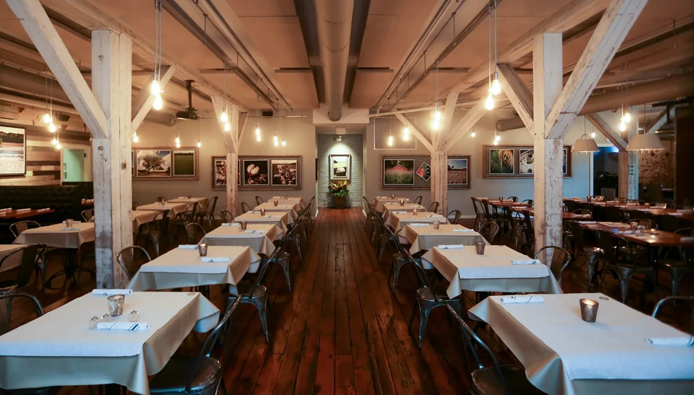
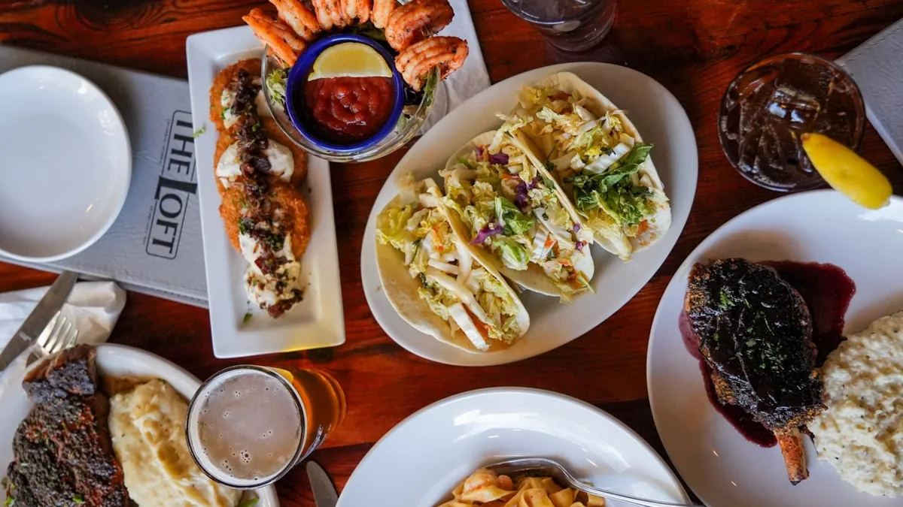
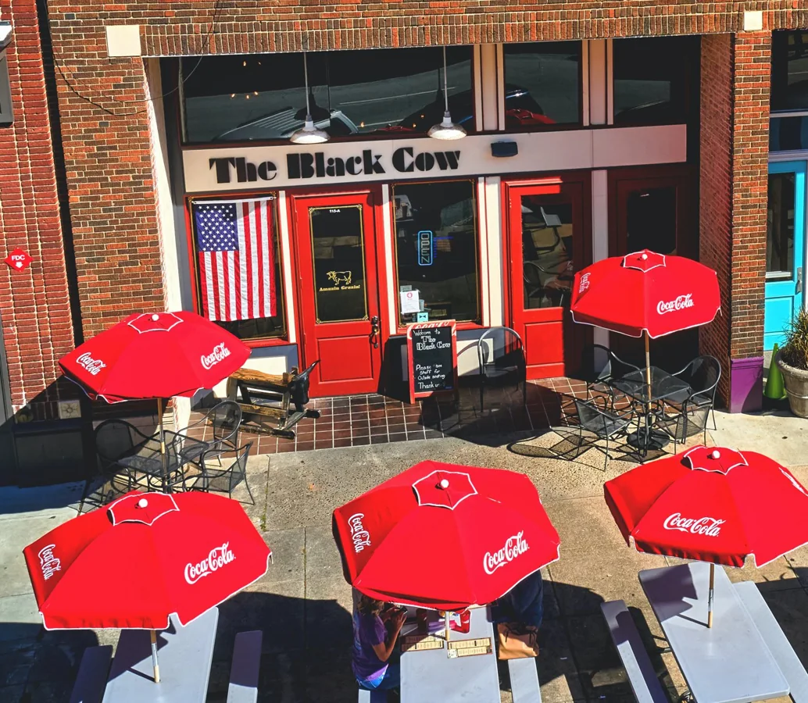
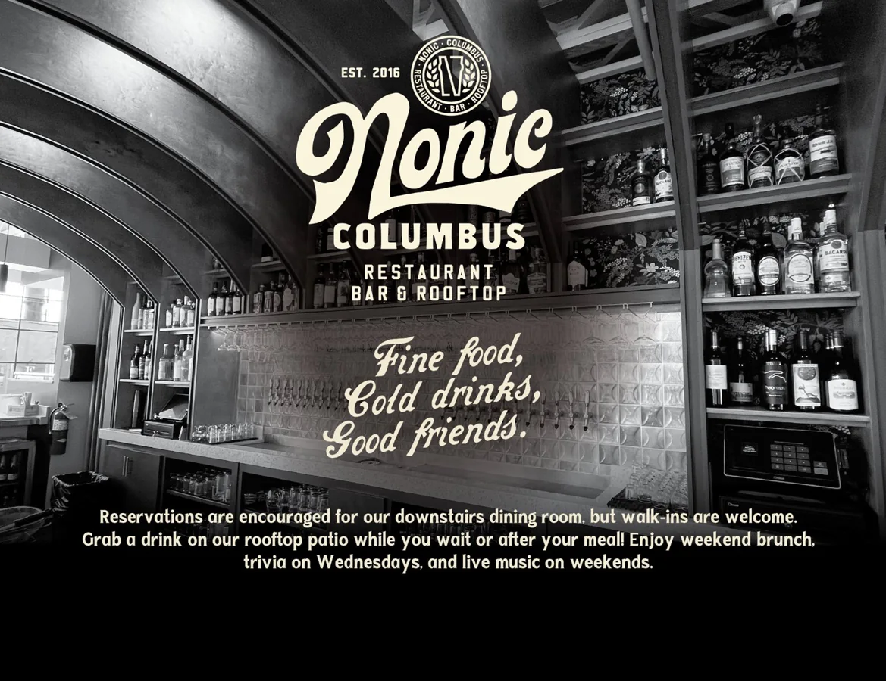
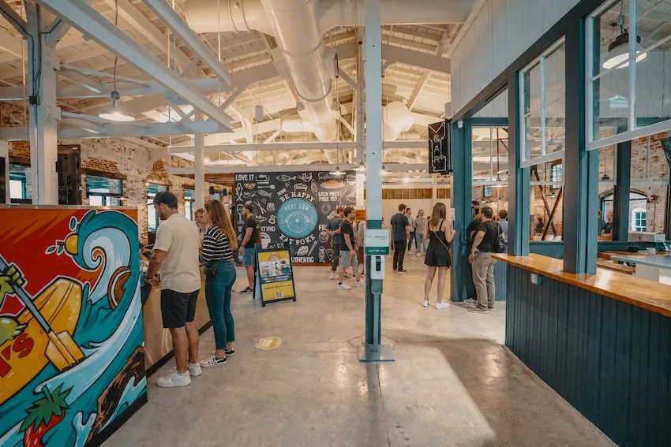
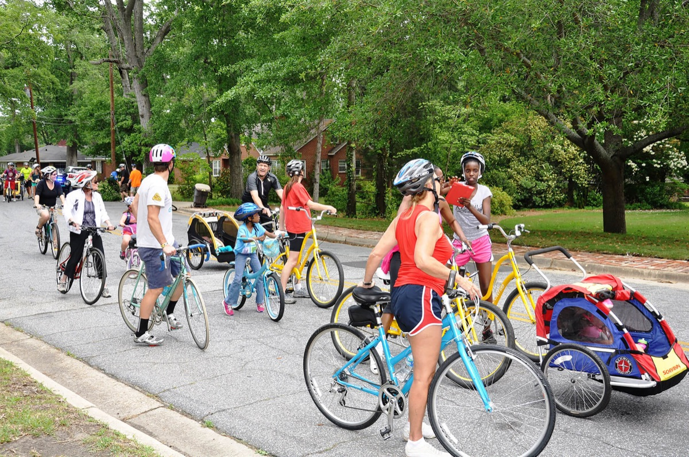
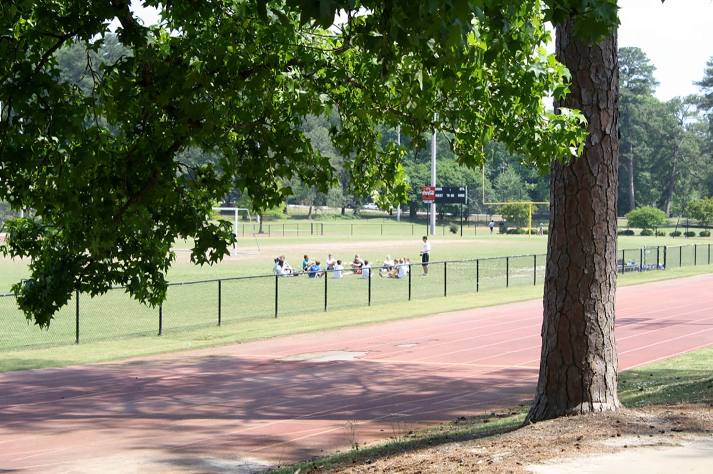
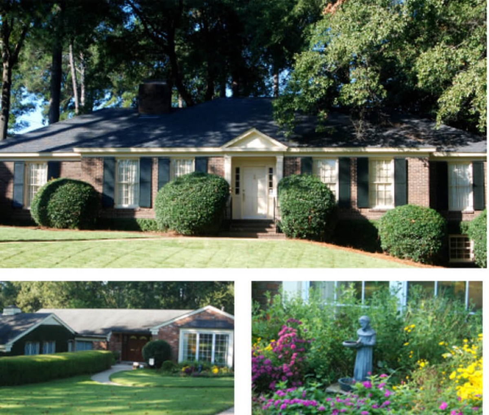
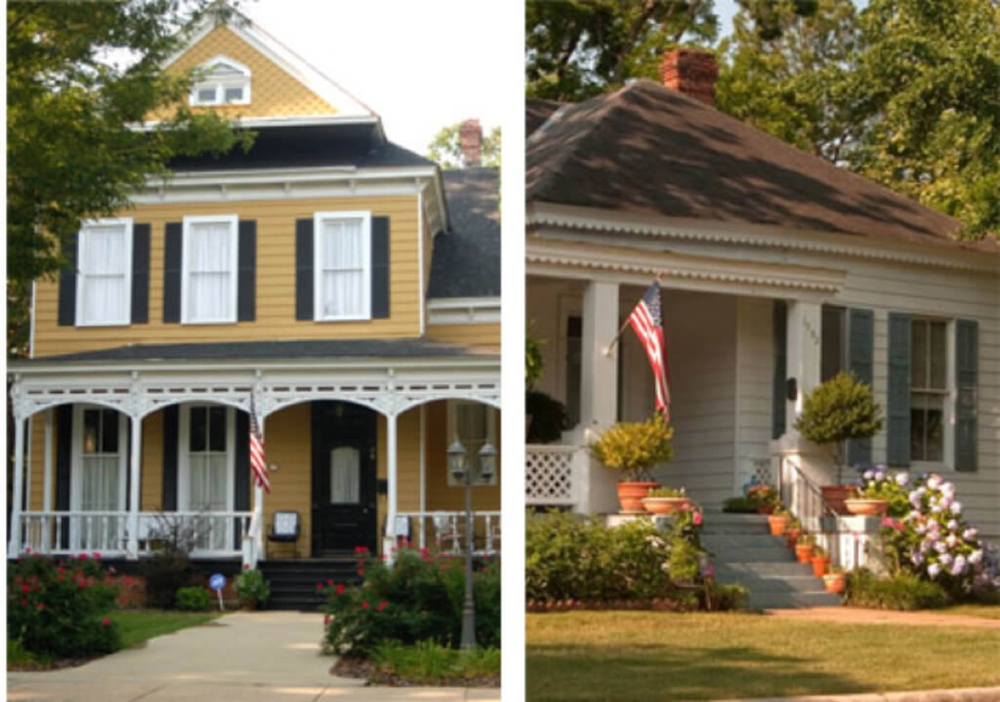

01
An Evening Out
11th and Bay Southern Table
1050 Bay Avenue · Columbus, GA
Southern cooking in a warm former cotton warehouse beside the river, with a patio for an evening outdoors.
RIVERFRONT DAYS. DOWNTOWN EVENINGS.
Life by the River.
Uptown is Columbus’s downtown district, centered on Broadway and the Chattahoochee riverfront. It combines dining, arts venues and outdoor destinations in a compact part of the city.
Find Nearby Rental HomesFIND YOUR NEXT HOME
Published Turman listings within 1.5 miles of the approximate guide point. Distances are straight-line estimates; homes may be outside the named neighborhood.
Finding nearby homes…
Browse All Nearby HomesA CLOSER LOOK AT UPTOWN
Uptown brings Broadway's shops and restaurants together with arts venues and the Chattahoochee riverfront. Explore the blocks around a prospective home to see how the neighborhood fits your everyday routine.
YOUR UPTOWN DINING SHORTLIST
From Southern comfort food to a dinner worth dressing up for, explore these 10 restaurants and Banks Food Hall. Open the full guide for visit tips, directions and restaurant websites.
Explore the Full Uptown Dining Guide →
An Evening Out
1050 Bay Avenue · Columbus, GA
Southern cooking in a warm former cotton warehouse beside the river, with a patio for an evening outdoors.
An Evening Out
1201 Front Avenue, Suite E · Columbus, GA
A polished Front Avenue dinner spot for a special evening. Check the current menu and business-casual dress code.
An Evening Out
14 West 11th Street · Columbus, GA
Italian steakhouse dining in the heart of Uptown. Choose the Broadway-area location when planning your visit.
An Evening Out
1039 1st Avenue · Columbus, GA
Seafood, cocktails and house-made desserts for a leisurely dinner near the center of Uptown.

Dinner & Entertainment
1032 Broadway · Columbus, GA
Dinner and live entertainment together on Broadway. Check the show calendar.

Everyday Favorites
115 12th Street · Columbus, GA
Southern comfort food and a relaxed setting on 12th Street, with burgers, meatloaf and other local favorites.
Everyday Favorites
105 12th Street · Columbus, GA
Southern-inspired food with local produce, meat and seafood. Explore brunch, lunch or dinner on 12th Street.

Dinner & Entertainment
207 13th Street · Columbus, GA
A 13th Street dining room and rooftop bar. Check hours for each space.
Everyday Favorites
1040 Broadway · Columbus, GA
Pizza, sandwiches and fusion dishes on Broadway. Pair a casual meal with the market’s upcoming events.
Everyday Favorites
1208 1st Avenue · Columbus, GA
Chicken and biscuits on 1st Avenue. Check the local dining directory.

Food Hall
1002 Bay Avenue · Columbus, GA
Several food vendors, drinks and a patio near the river. A flexible spot when everyone wants something different.
AFTER WORK. ON THE WEEKEND.
Riverfront adventures, nights at the theater and new ways to spend a Saturday. Start here, then explore the full local directory.
Explore All 49 Activities & Destinations →SCHOOL RESEARCH STARTS WITH THE ADDRESS
Compare programs, grade levels and enrollment requirements using the Muscogee County School District enrollment guide. Confirm the school assignment for the exact rental address with the district before making your choice.
PLAN THE EVERYDAY TRIPS
Stroll to Broadway dining, follow the 22-mile Chattahoochee RiverWalk, or compare METRA, parking and airport options when your day takes you farther.
Explore the Full Getting Around Guide →Walk or bike the RiverWalk, cross to Phenix City, and connect to the Fall Line Trace.
See routes, fares and access to the current trip planner.
Compare Uptown garages, drive-time examples and airport choices.
UPTOWN, BY THE NUMBERS
Uptown's historic blocks, riverfront and daily destinations come together in a compact part of Columbus. These figures offer another way to explore the area after browsing Turman's nearby homes.
THE BUILT LANDSCAPE
Homes.com reports a median year built of 1902 across its Uptown area and counts 66 homes in its neighborhood facts.
Area averages describe different types of homes; Turman listings have their own floor plans and measurements.
HOUSING SNAPSHOT
Homes.com describes more renters than owners in its Uptown area, where converted lofts and newer apartments add to the housing choices.
For current Turman availability and pricing, use the rental previews above.
Source: Homes.com, Uptown neighborhood guide. Mobility scores are attributed there to Local Logic. Area statistics and external rental-market data can change; check an exact address and current Turman listing before deciding.
QUICK, CLEAR ANSWERS
Yes. Uptown is the name used for Columbus’s downtown district. This guide focuses on the Broadway and riverfront area; rental previews below use a stated distance from an approximate guide point.
The listings section shows current Turman homes within 1.5 miles of this guide’s approximate map point, ordered by straight-line distance. It is a proximity search, not a neighborhood-boundary check. Contact leasing to verify a specific address.
School assignment depends on the exact address and district enrollment rules. Use Muscogee County School District’s enrollment resources and confirm the assignment with the district. Nearby-school results are research aids, not assigned-school lists.
Ask about move-in timing, total rent and fees, deposit options, pets, parking and the home’s features. Tour the property and review the application and lease requirements before committing.
KEEP EXPLORING COLUMBUS

EXPLORE COLUMBUSMidTownExplore Neighborhood →
EXPLORE COLUMBUSLake BottomExplore Neighborhood →
EXPLORE COLUMBUSHilton Woods/Hilton HeightsExplore Neighborhood →
EXPLORE COLUMBUSEast HighlandsExplore Neighborhood →Images show Columbus locations and nearby MidTown streets; they do not depict available rentals.